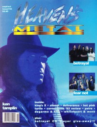
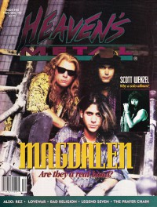

CMnexus
:
Contemporary Christian culture, music, and media.
Magazines
Profiles
Dove Awards
cmnexus.org
CM
nexus
→
Profiles
→
V
→
Doug Van Pelt
Doug Van Pelt
Writing Credits: 20 of 50
< -- Previous
Next -- >
15
16
17
18
19
20
21
22
23
24
Writing credits listing
Jul 1993 in
Heaven's Metal
#42
Concert Review:
Bloodgood
Galactic Cowboys
-
Space in Your Face
Die Happy
-
Intense Live Series, Vol. 4
Killed By Cain
-
Killed By Cain
Saviour Machine
-
Saviour Machine
Vengeance Rising
-
Anthology
Psychotic Wallpaper
-
demo
Redeemer
-
Darwin Is Dead
Sevenfold
-
4-song demo

Sep 1993 in
Heaven's Metal
#43
"Tamplin Testifies"
Ken Tamplin
"Passing Time With Betrayal"
Betrayal
"Galactic Cowboys on Trial"
Galactic Cowboys
, Evangelism in Christian music
"A Walk on The Lighter Side"
DeGarmo and Key
,
Whiteheart
,
Petra
Mercy
(Lorraine Lewis)
"Getting Honest With Doug Pinnick"
Doug Pinnick
,
King's X
"Cornerstone '93"
Cornerstone
Concert Review:
A Sight Unseen
Concert Review:
Galactic Cowboys
Magdalen
-
Revolution Mind
Fear Not
-
Fear Not
Dighayzoose
-
MagentaMantaLoveTree
Resurrection Band
-
Reach of Love
Betrayal
-
The Passing
Royal Anguish
-
Shocking The Priest
Refugee
-
Refugee
Decision-D
-
Moratoria
Electrik
-
Love Buzz Harmony

Nov 1993 in
Heaven's Metal
#44
"Gettin' Real With Magdelan"
Magdalen
"Metal Quest, Casper, WY"
Believer
-
Dimensions
Deliverance
-
Learn
Bloodgood
-
To Germany With Love
Decision-D
-
Moratoria
Lovewar
-
Soak Your Brain
The Clergy
-
Ruami
Jan 1994 in
Heaven's Metal
#45
"The Return of Neon Cross"
Neon Cross
"Bride Taps Harvest Field In Brazil"
Bride
What ... Sez:
KISS
(Bruce Kulick)
Whitecross
-
To the Limit
Wish for Eden
-
Pet the Fish
Chase
-
In Pursuit
Crawlspace
-
Shelter
Mar 1994 in
Heaven's Metal
#46
"Catching Up With Believer"
Believer
"Austin Fall Festival"
Slamcat
,
Final Judgement
,
Iron Faith
King's X
-
Dogman
Detritus
-
If But For One
Focused
-
Bow
Imagine This
-
Imagine This
Michael Sweet
-
Michael Sweet
Soul Shock Remedy
-
Fisheye Lens
Writing Credits: 20 of 50
< -- Previous
Next -- >
15
16
17
18
19
20
21
22
23
24
CMnexus
(noun)
The magazine index
of modern music
and Christianity
© 2011 CMnexus. Last updated April 2021.
Contact:
Rants and other correspondence to:
editor -AT- cmnexus
-DØT- org
About